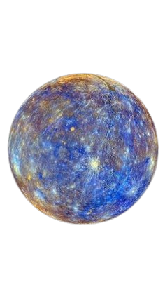
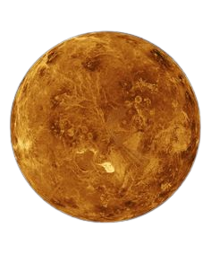
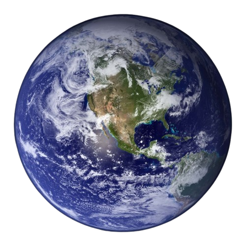

Mercúrio
Mercúrio é o menor planeta do nosso Sistema Solar e também o mais próximo do Sol! Por causa disso, ele é super quente e não tem água como a Terra.
Mais informações

Vênus
Vênus é o segundo planeta mais próximo do Sol e é conhecido como o planeta mais quente do Sistema Solar.
Mais informações

Terra
A Terra é o terceiro planeta a partir do Sol e o único que se sabe abrigar vida.
Mais informações

Marte
Marte, o Planeta Vermelho, é o quarto planeta a partir do Sol.
Mais informações
Júpiter
Júpiter é o maior planeta do Sistema Solar e é conhecido por sua Grande Mancha Vermelha.
Mais informações
Saturno
Saturno é famoso por seus anéis feitos de gelo e rochas.
Mais informações
Urano
Urano é um planeta gelado e tem uma rotação diferente dos outros planetas.
Mais informações
Netuno
Netuno é o planeta mais distante do Sol e é conhecido por seus ventos fortes.
Mais informações